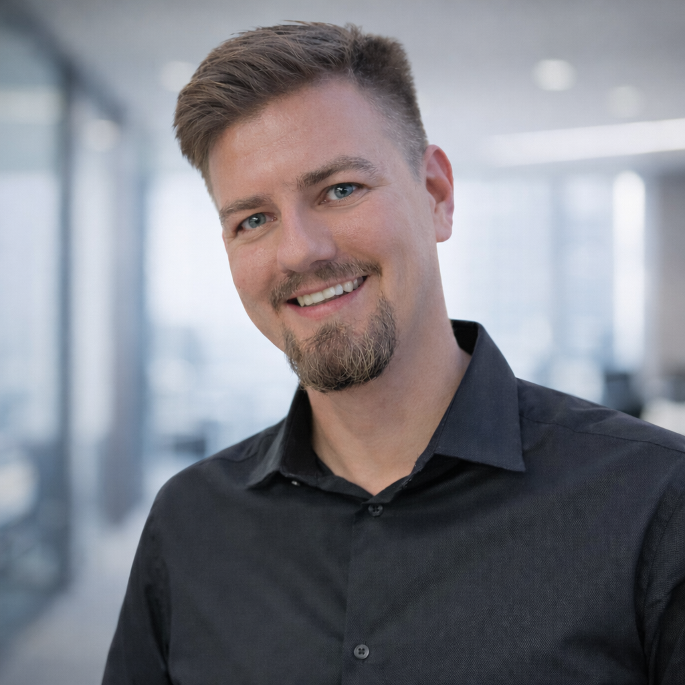

Jak myślę o problemach
- 📍Gemba + dane: obserwacja procesu, liczby i rozmowy z ludźmi.
- 🕵️Ukryte root cause: od “objawu” do mechanizmu problemu.
- 🧪Szybkie testy: hipotezy → eksperyment → standard.
- 🧷Utrzymanie efektu: stabilizacja, monitoring, ownership.
Cześć! Jestem
Łączę ciekawość badacza z dyscypliną inżyniera: znajduję przyczyny, które chowają się w “to nic takiego”. Usprawniam procesy, digitalizuję rutyny i wdrażam zmiany tak, żeby działały również wtedy, gdy mnie nie ma.
“I don’t walk to arrive. I walk to become.”

Poluję na “ciche straty” — rzeczy pomijane, bo nie krzyczą. Buduję mapę tarcia procesu i zamieniam ją w proste, trwałe usprawnienia (często z digitalem w tle).
Jestem człowiekiem o ogromnej ciekawości świata i tego, jak rzeczy działają. Najbardziej lubię sytuacje, gdy z pozornie nieistotnego problemu robi się temat, który realnie poprawia wynik: stabilniejszy proces, mniej strat, lepsza jakość.
Lubię współpracę: burze mózgów, warsztaty, mentoring. Wierzę, że najlepsze rozwiązania powstają tam, gdzie łączy się doświadczenie zespołu z klarownym procesem pracy (DMAIC / RCA / standardy).
Moje “pole gry” to FMCG: proces, dane, digital i praktyczne wdrożenia. Najczęściej działam tam, gdzie problem jest niby mały — ale przez miesiące generuje duże straty.
Docieranie do ukrytych przyczyn, zamiast łatania objawów.
OEE, waste, SPC — decyzje na danych, nie na przeczuciu.
Wdrażanie tak, żeby ludzie chcieli używać rozwiązania.
Patrzę end-to-end, nie tylko na “wąskie gardło”.
Centerlining, SMED, utrzymanie efektu i prosty monitoring.
No-touch, automatyzacja, obserwowalność procesu i danych.
Przykłady tematów, w których czuję się najlepiej: jakość bez dotykania, digital, OEE i straty. Zwykle zaczynam od zrozumienia mechanizmu problemu, a potem buduję rozwiązanie, które da się utrzymać.
Innowacyjny projekt digital “od użytkownika”: pilotaż nowej technologii, elementy uczenia maszynowego, zabezpieczenie jakości i szybsze wykrywanie odchyleń. Nowość, którą trzeba dowieźć zmianą, nie slajdem.
Tam, gdzie kontrola manualna jest wąskim gardłem — robię ją “bezdotykową”: automatyzacja, standard, szybsza reakcja na odchylenia, mniej rozproszenia i mniej ryzyka.
Mikroprzestoje i drobne odchylenia, które nikt nie wpisuje w raporty, a które w skali miesięcy zjadają wynik. Gemba + dane + rozmowy z operatorami → hipotezy → szybkie testy → standard.
Redukcja strat materiałowych i czasu przezbrojeń: stabilizacja procesu, standaryzacja działań, analiza przyczyn i wdrożenia, które da się powtórzyć na kolejnych liniach.
Praca jest na pierwszym planie, ale to sport uczy mnie konsekwencji i zarządzania energią.
Uczy zarządzania tempem: nie wygrywa ten, kto zaczyna najszybciej, tylko ten, kto dowozi plan. Zrobione 1/8 i 1/4 — cel na ten rok: 1/2.
Korona Gór Polski (28/28) nauczyła mnie logistyki, konsekwencji i planu B. Najlepsze decyzje podejmuje się zanim zrobi się trudno.
Technika > siła. Na razie indoor i bouldering, a cel: skały i ściana w terenie. Małe kroki, dobra baza i cierpliwość.
Idealny weekend? Zaplanowana wycieczka górska + dłuższy trening. A w wersji “pasywnej”: czas z rodziną i przyjaciółmi przy planszówkach.
Stawiam na rzeczy wdrażalne: narzędzia, które pomagają dowozić wynik, prowadzić zmianę i budować stabilny proces — nie tylko “ładny slajd”.
Rozwijam warsztat DMAIC / data / leadership w usprawnieniach. Cel: mocniejsze projekty end-to-end i jeszcze lepsze utrzymanie efektu.
Uporządkowane prowadzenie projektów: iteracje, priorytety, ryzyka i komunikacja. Idealne do tematów digital i zmian organizacyjnych.
Raportowanie i analityka, które wspierają decyzje operacyjne: czytelne KPI, trendy, szybkie wychwytywanie odchyleń, mniej ręcznej roboty.
Fundamenty chmury i podejścia “data-first” pod rozwiązania digital: integracje, dostęp do danych, skalowanie i bezpieczeństwo.
Mapowanie przepływu i eliminacja tarcia: od “jak jest” do “jak ma działać”, z jasnym planem działań i odpowiedzialności.
Podejście jakościowe i audytowe: zgodność, ryzyka, dokumentacja i standardy w produkcji.
Jeśli chcesz pogadać o digitalu w FMCG, no-touch quality, OEE albo o tym, jak wygrać z “cichymi stratami” — napisz.